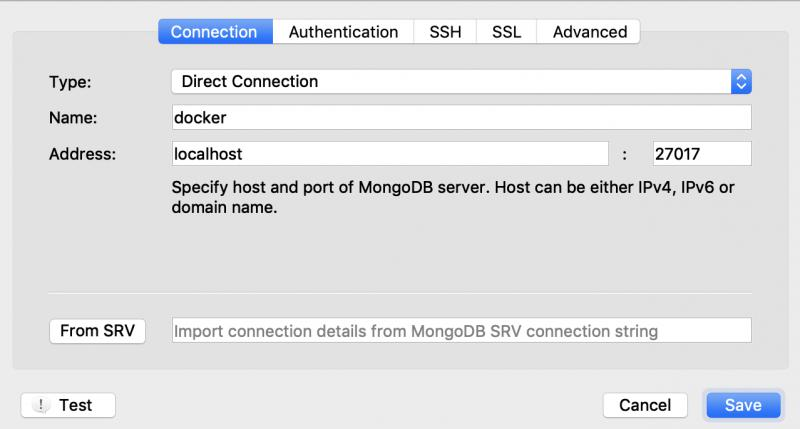
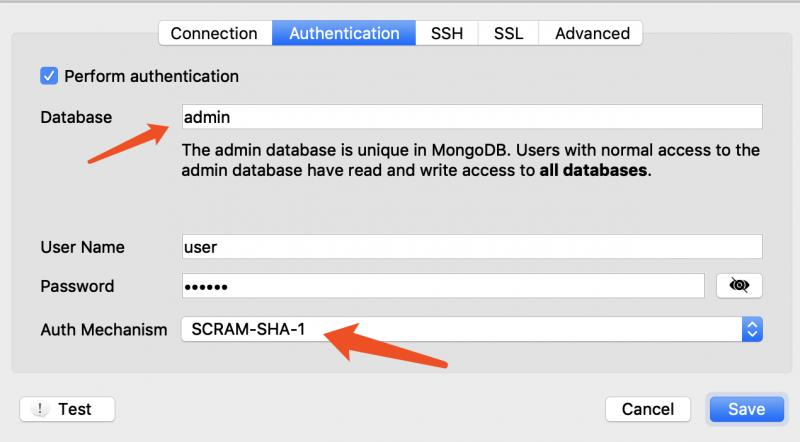
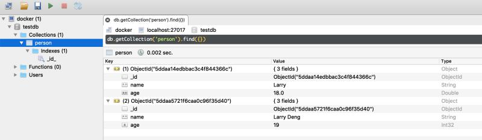
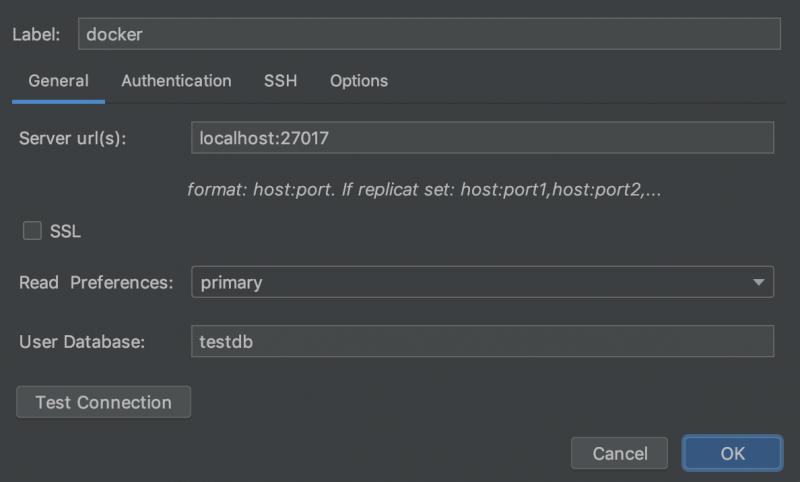
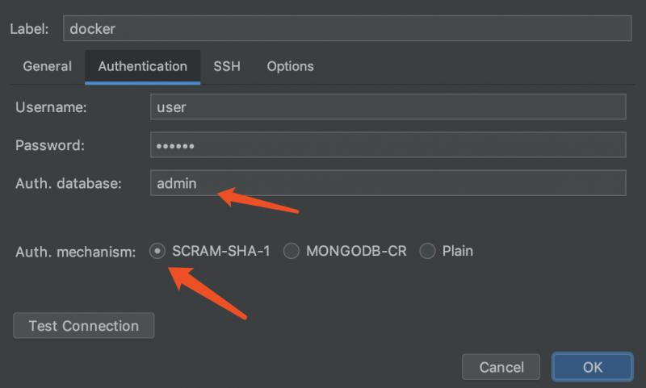
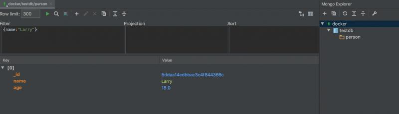

原文连接:https://www.cnblogs.com/larrydpk/p/11925515.html
1 安装
本文假设大家已经安装好了docker并能正常使用，所以不讲解如何安装docker了。用docker安装MongoDB最新版本如下：
# 从repository查找mongo的相关镜像，结果很多，其中第一条为官方的镜像
$ docker search mongo
# 下载官方镜像的最新版本
$ docker pull mongo:latest
# 完成后，检查是否下载成功
$ docker images
REPOSITORY TAG IMAGE ID CREATED SIZE
centos 7 5e35e350aded 12 days ago 203MB
mongo latest 965553e202a4 3 weeks ago 363MB
hello-world latest fce289e99eb9 10 months ago 1.84kB仅需要简单几个命令，我们就拥有了MongoDB的最新镜像了，后续就可以使用了。
2 启动
完成MongoDB的镜像下载后，启动就非常简单了，一个命令即可：
$ docker run -itd --name mongo -p 27017:27017 mongo --auth
305ebd8236678905d16dd76e75dcf99fdd812be6b13c240acece7985d29b316c（1）--name后面的参数为docker容器名；
（2）-p后面是端口映射，即宿主端口:容器端口；
（3）--auth是否开始鉴权，如果不想开启可以去掉；
成功启动MongoDB一个实例后，会返回容器ID，如305ebd8236678905d16dd76e75dcf99fdd812be6b13c240acece7985d29b316c。
通过命令docker ps可以查看正在运行的容器，经过检查，确实已经起来了。
注意：默认数据是存在容器系统的/data/db目录下的，如果需要使用自定义的宿主机器目录，可以在启动命令加上参数：
-v /my/own/datadir:/data/db
3 创建用户与集合
## 3.1 进入容器
容器起来后，下一步是进入容器：
# 进入容器可以用以下两种方法
# 分别是通过容器名和容器ID
$ docker exec -it mongo bash
$ docker exec -it 305ebd823667 bash上面进入容器后，其实是进入了容器的系统，并打开bash。
3.2 通过客户端命令连接数据库
接着通过mongo命令连接到MongoDB的数据库服务。
# 默认连接本地的27017端口的MongoDB
$ mongo
# 指定IP与端口进行连接
$ mongo 127.0.0.1:27017
# 指定用户名和密码连接到指定的MongoDB数据库
$ mongo 127.0.0.1:27017/admin -u user -p password连接数据库成功后，会返回一些信息，如SeesionID和版本号等。
3.3 查看版本
（1）在linux命令通过mongo --version查询；
（2）连接上数据库后，通过db.version()查询。
root@305ebd823667:/# mongo --version
MongoDB shell version v4.2.1
git version: edf6d45851c0b9ee15548f0f847df141764a317e
OpenSSL version: OpenSSL 1.1.1 11 Sep 2018
root@305ebd823667:/# mongo
> db.version()
4.2.13.4 创建admin管理用户
连上数据库后，我们先创建一个admin用户，用以管理其它用户：
> use admin
switched to db admin
> db.createUser({ user:'admin',pwd:'123456',roles:[ { role:'userAdminAnyDatabase', db: 'admin'}]});
Successfully added user: {
"user" : "admin",
"roles" : [
{
"role" : "userAdminAnyDatabase",
"db" : "admin"
}
]
}
> 3.5 创建具有读写权限的用户
根据业务需求，创建不用的用户，如下面创建拥有读写权限的用户user：
> db.auth('admin','123456');
1
> db.createUser({ user:'user',pwd:'123456',roles:[ { role:'readWrite', db: 'testdb'}]});
Successfully added user: {
"user" : "user",
"roles" : [
{
"role" : "readWrite",
"db" : "testdb"
}
]
}
> 3.6 认证用户并操作
> db.auth('user','123456')
1
> use testdb
switched to db testdb
>
> db.person.insert({name:'Larry',age:18})
WriteResult({ "nInserted" : 1 })
> db.person.find({})
{ "_id" : ObjectId("5ddaa14edbbac3c4f844366c"), "name" : "Larry", "age" : 18 }
> 4 两款优秀的可视化工具
通过前面的操作，我们已经建立了用户，并尝试创建了数据库和集合。但通过命令行来操作总是不那么方便，我们需要可视化软件来进行操作。下面将介绍两款优秀的可视化软件，展示如何连接。如何进行CRUD等操作就不一一介绍了，还是比较友好的，容易使用。
4.1 Robo3T
创建连接：

注意下面填的是鉴权数据库，而不是用户的数据库：

操作界面：

4.2 IDEA Mongo Plugin
这个是支持JetBrains全系列软件的插件，IDEA当然也可以安装。
连接设置：
注意下面的User Database是该用户下的数据库，写错了会连不上。

注意下面Auth Database为鉴权的数据库，默认为admin。

操作界面：

总结
本文介绍了通过Docker安装最新版的MongoDB，并通过例子演示了如何运行和创建用户与集合，最后还介绍了两款非常友好的可视化工具，希望能带没有接触过的人入个门吧。
欢迎关注公众号<南瓜慢说>，将持续为你更新...

多读书，多分享；多写作，多整理。